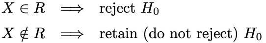
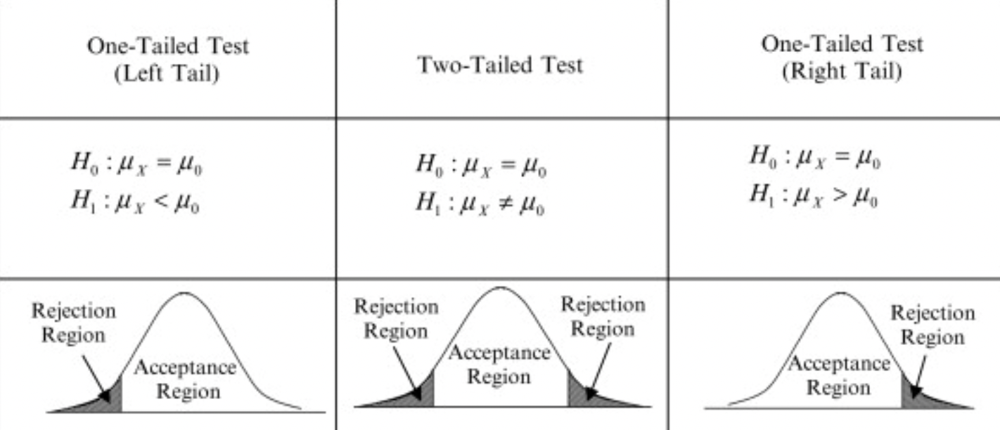

Hypothesis Testing

Science has never been defined by infallibility or superhuman perfection. It has always been abouthealthyskepticism, about putting every hypothesis to the test.
- Ben Orlin, Math with Bad Drawings
Hypothesis testing is like legal trial. In law, you assume someone is innocent until proven guilty with enough evidence. Similarly, in statistics, you assume that your null hypothesis is true until you have enough evidence to reject it. In this blog post, I will talk about Hypothesis testing in general. I will mostly cover the type of hypothesis and how to approach a decision making problem with respect to hypothesis testing.
Hypothesis testing plays an important role in statistics for decision making. The outcome of any study solely depends upon the evidences that you gather from the experiments. Usually, hypothesis testing is performed over a sample of a population. Suppose, you want to know if the online study is more effective on the students or the offline study. To make a decision, you take some students who studied online over a period of time and another group of students who studied offline for the same period of time. There are two types of hypothesis, Null hypothesis and Alternative hypothesis. For the above case, your null hypothesis would be “ Both offline and online mode are equally effective” and Alternate hypothesis would be “effect is not the same for both online and offline mode”. If the offline mode is more effective than online mode, you will reject the null hypothesis and conclude that evidence favours the alternative hypothesis. The above case is an example of two-tailed hypothesis testing. I will discuss more about two-tailed hypothesis testing in this post later. Note that it’s not the only way of assuming the hypothesis. Your null and alternative hypothesis may be different for the similar kind of problem depending upon your experiment and use cases. Let’s talk in the language of statistics.
Let X be a random variable and 𝒳 be the range of random variable X. We test a hypothesis by finding a subset of random variable X∈R where R is the rejection region. As stated earlier, null hypothesis is denoted by H0 and alternative hypothesis is denoted by H1. So, if x∈R, we reject H0 and accept H1, otherwise we do not reject H0.

There are two types of errors one can possibly make during hypothesis testing. Rejecting H0 when H0 is true can causes Type I error and retaining H0 when H1 is true can cause Type II error.

Before exploring the technical aspects of hypothesis testing, You need to have knowledge about following terminologies.
Significance level(𝝰): It is the probability of rejecting a null hypothesis when null hypothesis is true. In laymen term, It is the amount of risk, that we are willing to take for committing type I error . The most commonly value used is 0.05, means if you calculate the range of mean value for a population or sample, then 5 out of 100 times, mean does not lie in the region even if it is said to be. It signifies the rejection region. Any value that falls inside this region, is rejected. The value of alpha depends upon the types of experiments that you are studying. If you are trying to prove the effectiveness of a drug, then you might want to decrease the risk by limiting the alpha value to 1% because you wouldn’t want any potential risk to patients.

Note: In case of two-tailed test, rejection region of both tails add upto alpha value of 0.05, each with 0.025.
P value(p): It is the output value of your hypothesis test. In simple term, it is the probability of observing that sample when your null hypothesis is true. Therefore if p-value is less than than the significance level, then we reject the null hypothesis or accept otherwise.
Steps involved in hypothesis testing:
- Formulate hypothesis
- Decide statistical test
- find the test statistics
- make decision based on test output.
Tests used in hypothesis testing
The most crucial part of the hypothesis testing is to choose appropriate hypothesis test. Most commonly used tests are Z-test, t-test, chi-square test, ANOVA etc. Let’ see them in brief one-by-one.
Z-test: It is a statistical test which is used to state the relation between two population mean and sample mean or two sample means whether they are different or similar when the population mean and standard deviation are known. If you would like to perform two-tailed test, then your null hypothesis(H0) would be “ Means of both the population are same(μ1 = μ2)” and alternate hypothesis would be “ both the population means are different”. Generally we assume our null hypothesis to be true until we find a strong evidence against it.
t-test: It is a kind of inferential statistical hypothesis test which is used to differentiate between the means of two groups. Under null hypothesis, samples follow student-t distribution. it is similar to z-test but differs in the case of known parameters. z test is used when population mean and standard deviation are know while if the population standard deviation is not known, we use t-test. Certain assumptions are made about samples before applying t-test. Data should be normally distributed. All the data should follow equal scale of measurement. Variance of samples should be homogenous. You can use Levene test or barlette test. These tests are included with scipy library. If sample variances are not equal, then you can perform welch’s t-test instead.
stay tuned…